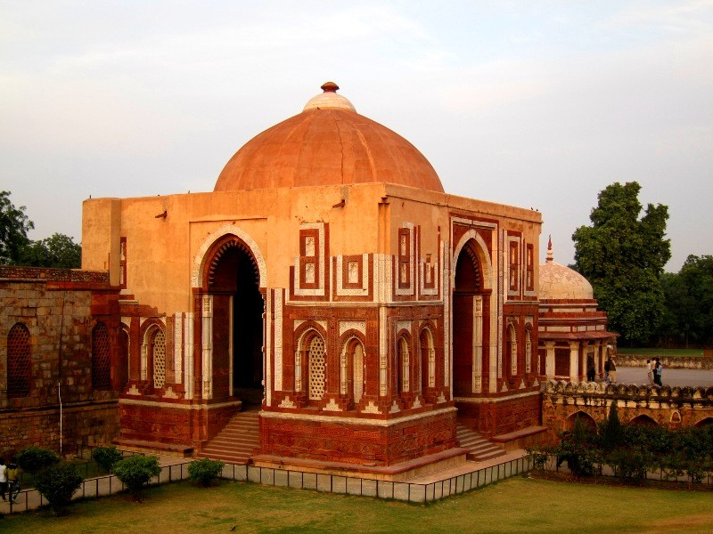

Delhi Sultanate

- 1191 to 1557 AD
- Each dynasty made their own flavors but broad style remained same in all.
| Slave/Ilbari Dynasty | Khilji Dynasty | Tughlaq Dynasty | Lodi Dynasty | |
|---|---|---|---|---|
| Year | 1206 to 1290 AD | 1290 to 1320 AD | 1321 to 1413 AD | 1451 to 1526 AD |
| Style Name | Mameluke Style | Seljuk Style | - | - |
| Introduced | - | - | Batter construction style | Double Domes |
| Stone used | - | Red Sandstone | Grey Sandstone | - |
| Main Focus | Remodelling of Existing Hindu structures | - | Strength of the building [But no decorations] | Only Tombs Hard & Bare without decorations |
| Feature | - | Arcuade Style & Mortar as cementing agent |
Arch + Lintel entrance [both used] | - |
Slave/Ilbari Dynasty
- Converted old Jain & Hindu temples
Eg: Quwat-ul-Islam
Qutub Minar: Initiated by "Qutub-ud-din Aibak" [did only ground floor]
- Ground floor: Qutub-ud-din Aibak
- Next 3 storey: "Iltutmish" [Slave dynasty]
- 5th Floor: "Feroze Shah Tughlaq" [Tughlaq dynasty]
Qutub Minar@Delhi

5 Storey structure
World's tallest brick minaret
Quwat-ul-Islam Mosque@Qutub Minar Premises
Converted from Jain temple

Arhai-din-ka-Jhopra@Ajmer, Rajasthan
Khilji Dynasty
- Arcuade Style [see Indo-Islamic features]
- Mortar - prominent cementing agent from now onwards
- Red Sandstone

Alai Darwaza@Qutub Minar Premises
By Alauddin Khalji
"Gate of Alauddin"
Siri Fort@Delhi
Tughlaq Dynasty
- Crisis Period of Delhi Sultanate Architecture
- Both Lintel & Arch [see Indo-Islamic features]
- Grey Sandstone
Introduced Batter system - Sloping walls to give more Strength
Tughlaqabaad City@Delhi
By Ghiyas-ud-din Tughlaq
Jahaanpanah city@Delhi
by Muhammad bin Tughlaq
Ferozabad/Firozpur city@Sutlej, Punjab
by Feroze Shah Tughlaq
Note: Not Firozabad near Agra
Lodi Dynasty
- Architecture back seat. Only Tombs built.
- Hard & Bare tombs [No decorations]
- Octagonal shaped tombs & supported by Sloping Verandah
- Double Dome: Hollow Dome inside the Top dome - To give strength & Lower the inner dome height
Features
Octogonal Tomb
Double Dome
Lodi Gardens
City of Agra
By Sikandar Lodi
×

×